Four new settings, all OFF by default: TEXT SIZE 100 / 115 / 130 %, REDUCE MOTION, REDUCE FLASHES, and CONTROLS remap. Three places to put them. Real frames of the live build with the rows drawn in. Nothing is built.
My pick: C (A's rows plus a one-time comfort card at the title).
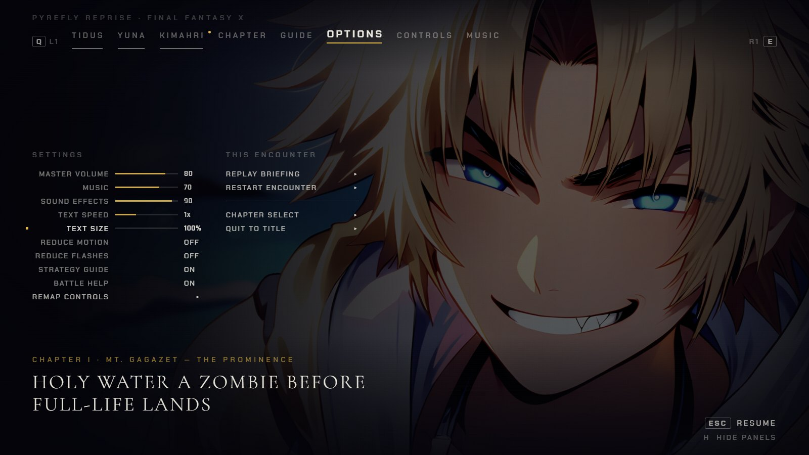
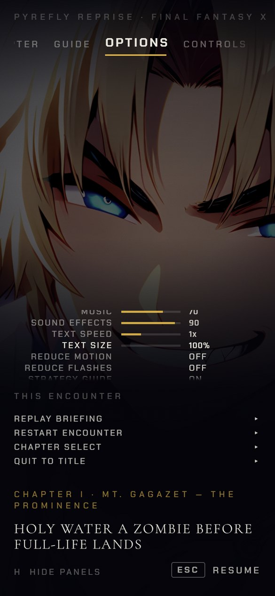
Pause, OPTIONS: three new rows under TEXT SPEED, nudged with Left / Right like the rest. REMAP CONTROLS opens the CONTROLS tab you already have, where Enter on a row waits for a key.
Smallest. No new screen and no new tab. But a player only finds it once a fight or scene is already running, after the first flash.
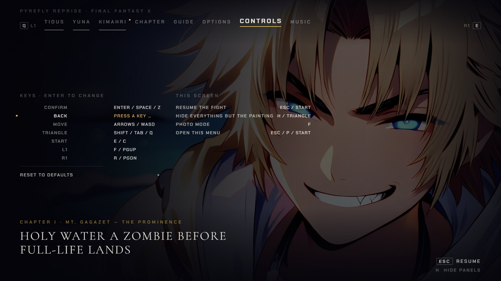
CONTROLS, rebinding BACK. Phone: no remap row (touch only).
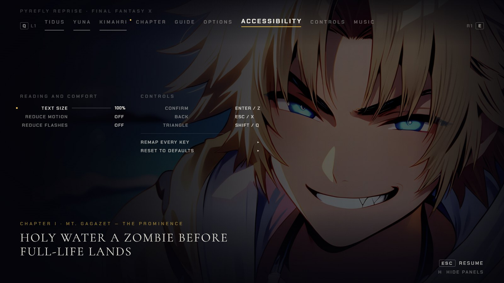
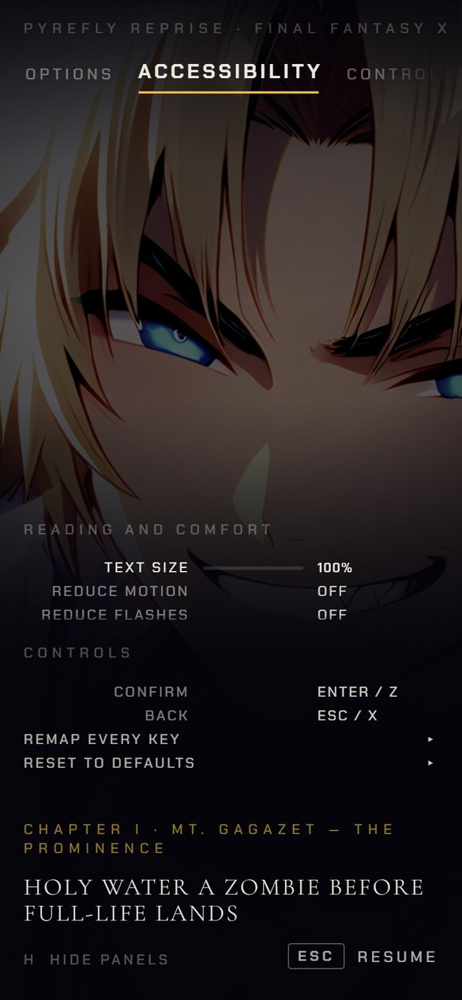
A ninth tab after OPTIONS. READING AND COMFORT on the left, the key list and REMAP EVERY KEY on the right. Everything about comfort is in one named place.
Small to medium. A ninth tab makes the strip longer, and on a phone it is one more swipe. The keys now show in two tabs (here and CONTROLS). It has the same problem as A: you only find it after the first flash.
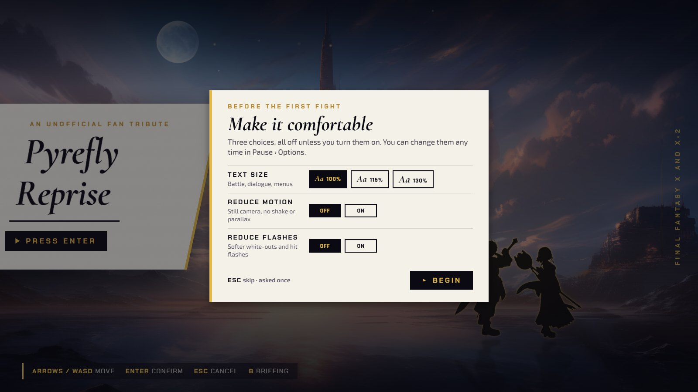
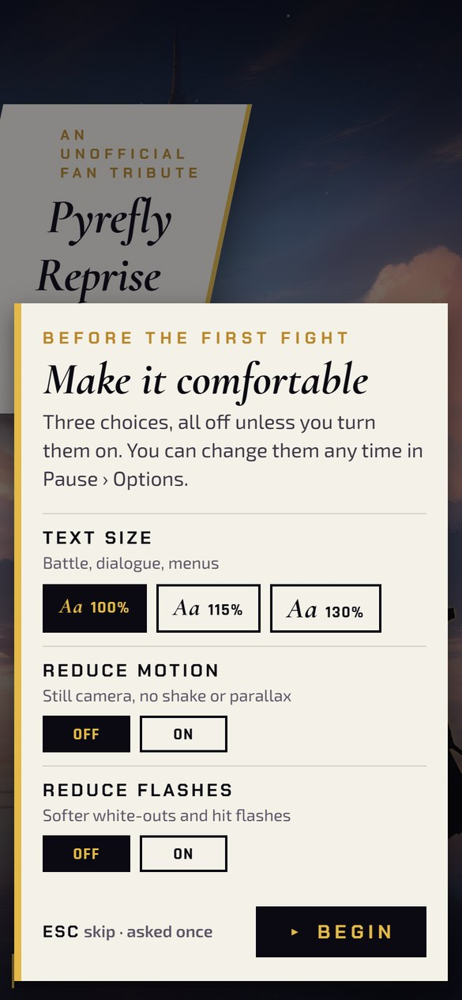
The first time you press Enter at the title, one ivory card asks three things. Each one shows what it does, and all three start OFF. BEGIN or Esc closes it, and it never asks again. After that, everything lives in A's rows.
A's cost, plus one card and one saved "asked" flag. Everyone sees the card once. In return, REDUCE FLASHES and TEXT SIZE can be set before the opening scene and the first battle flash, which is the only point where they fully help.
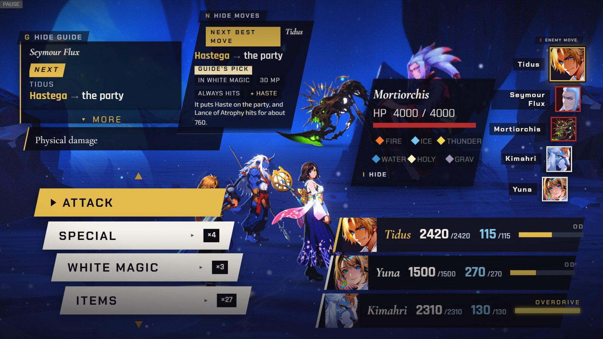
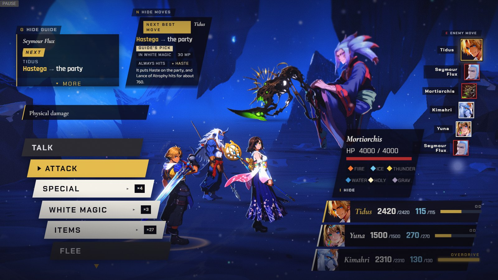
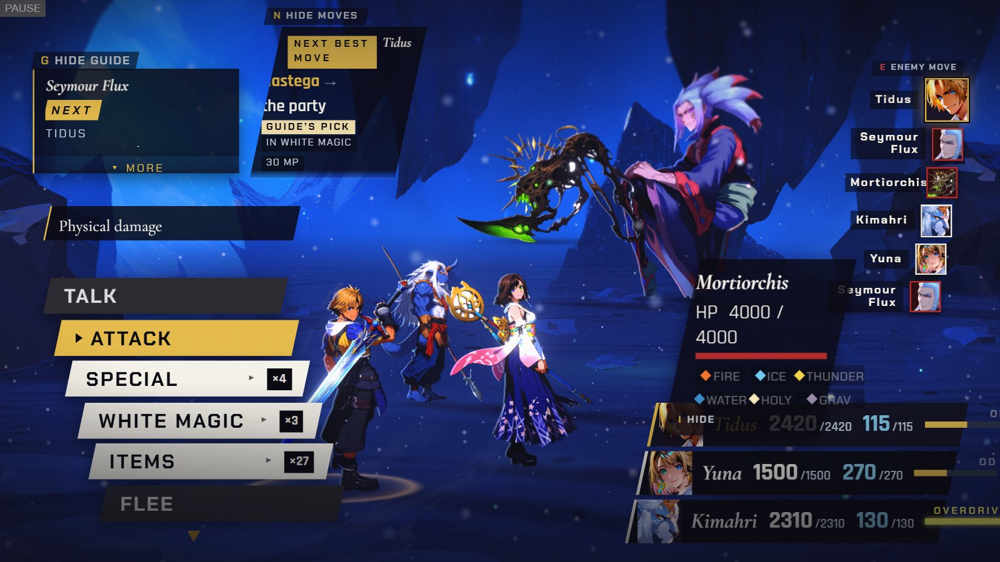
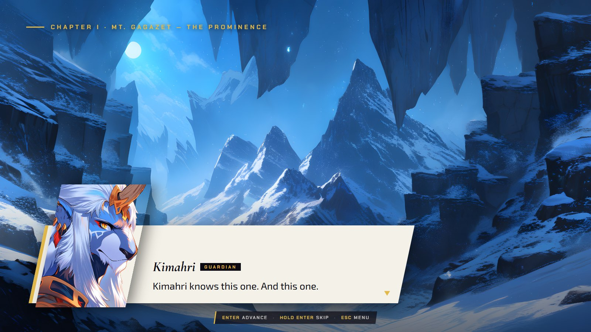
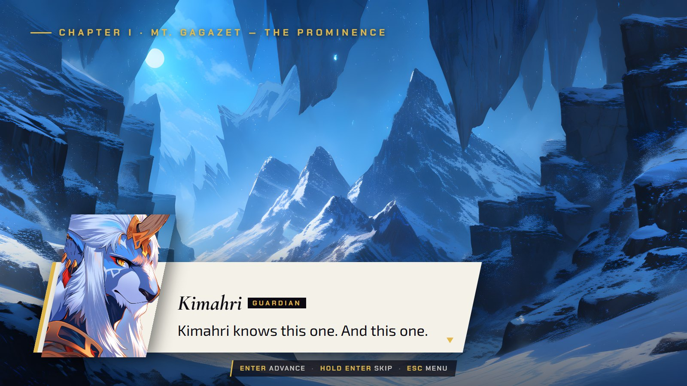
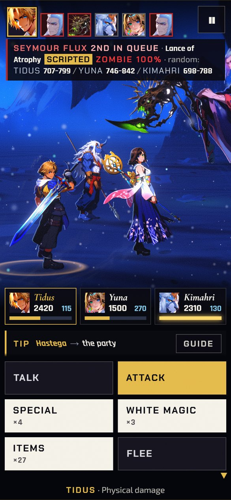
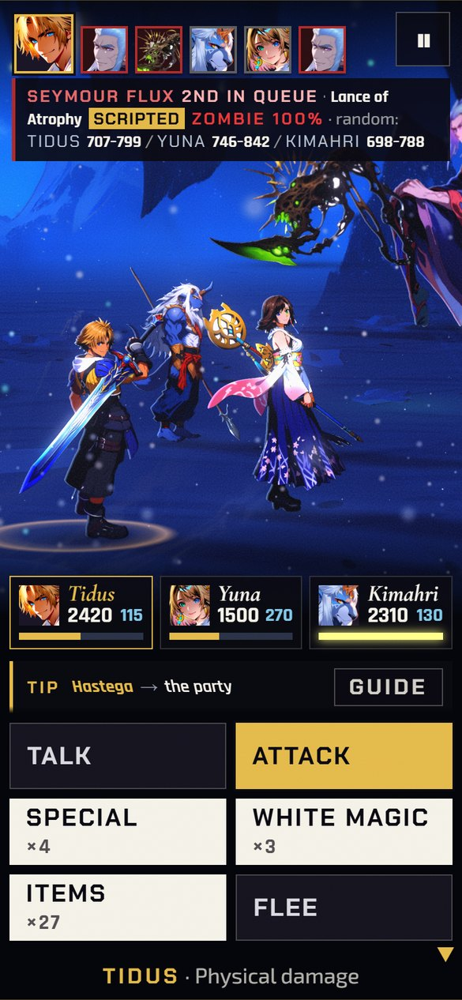
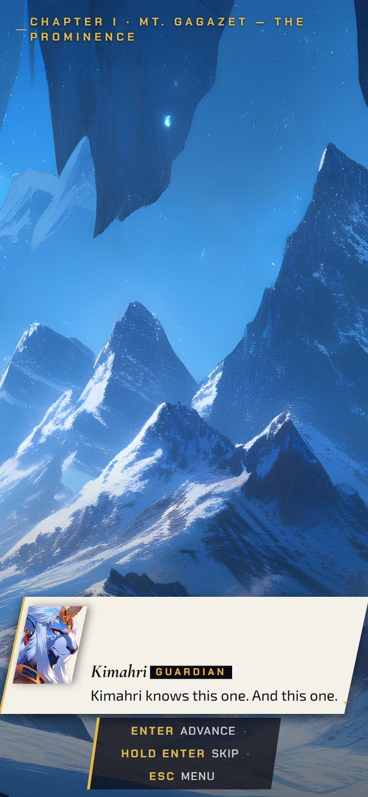
CONTROLS cuts off four labels at 1600×900 (e.g. "RESUME THE FIG…"). The phone's OPTIONS tab cuts off "MASTER VOLUM…". Whichever option you pick, the build fixes both, because they are in the same files.